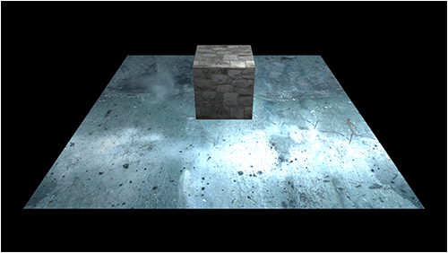
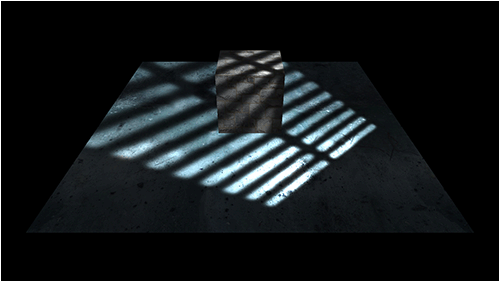
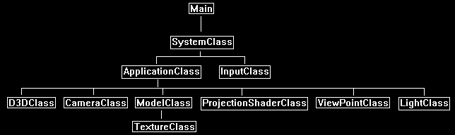

This tutorial will cover how to implement projected light maps in DirectX 11 using HLSL and C++.
The code in this tutorial is based on the previous projective texturing tutorial.
Projected light maps are one of the best ways to reproduce complex scene lighting with just some simple 2D light map textures.
In the same way we have used projective texturing to render 2D textures onto 3D scenes we will use 2D light map textures and project them onto 3D scenes.
For this tutorial we will start with a basic 3D scene that is illuminated by a single point light:

Next, we will use a black and white texture that will represent the light we want to project onto the scene.
We will project it from the position of the point light.
The white areas in the texture are where the light will be added to the scene.
The black areas represent where there will only be ambient light.
The following texture is just the inverse of a sewer grate with a blur added.
Now when we project the light texture onto the scene, we get the following result:

Framework
For this tutorial we have added the LightClass from the previous tutorials back into the framework.

We will start the code section of the tutorial by looking at the modified projection shader.
Projection.vs
The projection shaders have been modified to handle projecting light maps and handle point lighting, since both are required to achieve the correct effect.
////////////////////////////////////////////////////////////////////////////////
// Filename: projection.vs
////////////////////////////////////////////////////////////////////////////////
/////////////
// GLOBALS //
/////////////
cbuffer MatrixBuffer
{
matrix worldMatrix;
matrix viewMatrix;
matrix projectionMatrix;
matrix viewMatrix2;
matrix projectionMatrix2;
};
We use point lights instead of directional lighting as it is more fitting for projecting light maps, and so we need an input for the position of the light.
This can also be considered closer to a spot light than a point light.
cbuffer LightPositionBuffer
{
float3 lightPosition;
float padding;
};
//////////////
// TYPEDEFS //
//////////////
Both structs use normals for the point light calculations.
struct VertexInputType
{
float4 position : POSITION;
float2 tex : TEXCOORD0;
float3 normal : NORMAL;
};
struct PixelInputType
{
float4 position : SV_POSITION;
float2 tex : TEXCOORD0;
float3 normal : NORMAL;
float4 viewPosition : TEXCOORD1;
The light position is newly added as an output variable to be sent to the pixel shader for point light calculations.
float3 lightPos : TEXCOORD2;
};
////////////////////////////////////////////////////////////////////////////////
// Vertex Shader
////////////////////////////////////////////////////////////////////////////////
PixelInputType ProjectionVertexShader(VertexInputType input)
{
PixelInputType output;
float4 worldPosition;
// Change the position vector to be 4 units for proper matrix calculations.
input.position.w = 1.0f;
// Calculate the position of the vertex against the world, view, and projection matrices.
output.position = mul(input.position, worldMatrix);
output.position = mul(output.position, viewMatrix);
output.position = mul(output.position, projectionMatrix);
// Store the position of the vertice as viewed by the projection view point in a separate variable.
output.viewPosition = mul(input.position, worldMatrix);
output.viewPosition = mul(output.viewPosition, viewMatrix2);
output.viewPosition = mul(output.viewPosition, projectionMatrix2);
// Store the texture coordinates for the pixel shader.
output.tex = input.tex;
We add the normal vector calculation for point lights.
// Calculate the normal vector against the world matrix only.
output.normal = mul(input.normal, (float3x3)worldMatrix);
// Normalize the normal vector.
output.normal = normalize(output.normal);
The point light calculations have also been added to the vertex shader.
// Calculate the position of the vertex in the world.
worldPosition = mul(input.position, worldMatrix);
// Determine the light position based on the position of the light and the position of the vertex in the world.
output.lightPos = lightPosition.xyz - worldPosition.xyz;
// Normalize the light position vector.
output.lightPos = normalize(output.lightPos);
return output;
}
Projection.ps
////////////////////////////////////////////////////////////////////////////////
// Filename: projection.ps
////////////////////////////////////////////////////////////////////////////////
/////////////
// GLOBALS //
/////////////
Texture2D shaderTexture : register(t0);
The projectionTexture is now the light map that will be projected onto the 3D scene.
Texture2D projectionTexture : register(t1);
SamplerState SampleType : register(s0);
//////////////
// TYPEDEFS //
//////////////
struct PixelInputType
{
float4 position : SV_POSITION;
float2 tex : TEXCOORD0;
float3 normal : NORMAL;
float4 viewPosition : TEXCOORD1;
float3 lightPos : TEXCOORD2;
};
We will require an ambient, diffuse, and brightness value for our point light calculations.
//////////////////////
// CONSTANT BUFFERS //
//////////////////////
cbuffer LightBuffer
{
float4 ambientColor;
float4 diffuseColor;
float brightness;
float3 padding;
};
////////////////////////////////////////////////////////////////////////////////
// Pixel Shader
////////////////////////////////////////////////////////////////////////////////
float4 ProjectionPixelShader(PixelInputType input) : SV_TARGET
{
float lightIntensity;
float4 color;
float4 textureColor;
float2 projectTexCoord;
float4 projectionColor;
Calculate the point light and sample the color texture as normal.
// Calculate the amount of light on this pixel.
lightIntensity = saturate(dot(input.normal, input.lightPos));
if(lightIntensity > 0.0f)
{
// Determine the light color based on the diffuse color and the amount of light intensity.
color = (diffuseColor * lightIntensity) * brightness;
}
// Sample the pixel color from the texture using the sampler at this texture coordinate location.
textureColor = shaderTexture.Sample(SampleType, input.tex);
Calculate the projected coordinates for projecting the light.
// Calculate the projected texture coordinates.
projectTexCoord.x = input.viewPosition.x / input.viewPosition.w / 2.0f + 0.5f;
projectTexCoord.y = -input.viewPosition.y / input.viewPosition.w / 2.0f + 0.5f;
// Determine if the projected coordinates are in the 0 to 1 range. If it is then this pixel is inside the projected view port.
if((saturate(projectTexCoord.x) == projectTexCoord.x) && (saturate(projectTexCoord.y) == projectTexCoord.y))
{
// Sample the color value from the projection texture using the sampler at the projected texture coordinate location.
projectionColor = projectionTexture.Sample(SampleType, projectTexCoord);
If the pixel is inside the projection area where we are projecting the light map then we calculate the output color as the regular lighting and texturing multiplied by the light map value.
// Set the output color of this pixel to the projection texture overriding the regular color value.
color = saturate((color * projectionColor * textureColor) + (ambientColor * textureColor));
}
else
{
If the pixel is not inside the projection area where we are projecting the light map then the output value is just the ambient light combined with the color texture.
color = ambientColor * textureColor;
}
return color;
}
Projectionshaderclass.h
The ProjectionShaderClass is the same as the previous tutorial except that it has been modified to handle point lights.
////////////////////////////////////////////////////////////////////////////////
// Filename: projectionshaderclass.h
////////////////////////////////////////////////////////////////////////////////
#ifndef _PROJECTIONSHADERCLASS_H_
#define _PROJECTIONSHADERCLASS_H_
//////////////
// INCLUDES //
//////////////
#include <d3d11.h>
#include <d3dcompiler.h>
#include <directxmath.h>
#include <fstream>
using namespace DirectX;
using namespace std;
////////////////////////////////////////////////////////////////////////////////
// Class name: ProjectionShaderClass
////////////////////////////////////////////////////////////////////////////////
class ProjectionShaderClass
{
private:
struct MatrixBufferType
{
XMMATRIX world;
XMMATRIX view;
XMMATRIX projection;
XMMATRIX view2;
XMMATRIX projection2;
};
We have two new structs to support the point lights.
struct LightPositionBufferType
{
XMFLOAT3 lightPosition;
float padding;
};
struct LightBufferType
{
XMFLOAT4 ambientColor;
XMFLOAT4 diffuseColor;
float brightness;
XMFLOAT3 padding;
};
public:
ProjectionShaderClass();
ProjectionShaderClass(const ProjectionShaderClass&);
~ProjectionShaderClass();
bool Initialize(ID3D11Device*, HWND);
void Shutdown();
bool Render(ID3D11DeviceContext*, int, XMMATRIX, XMMATRIX, XMMATRIX, XMMATRIX, XMMATRIX, ID3D11ShaderResourceView*, ID3D11ShaderResourceView*,
XMFLOAT4, XMFLOAT4, XMFLOAT3, float);
private:
bool InitializeShader(ID3D11Device*, HWND, WCHAR*, WCHAR*);
void ShutdownShader();
void OutputShaderErrorMessage(ID3D10Blob*, HWND, WCHAR*);
bool SetShaderParameters(ID3D11DeviceContext*, XMMATRIX, XMMATRIX, XMMATRIX, XMMATRIX, XMMATRIX, ID3D11ShaderResourceView*, ID3D11ShaderResourceView*,
XMFLOAT4, XMFLOAT4, XMFLOAT3, float);
void RenderShader(ID3D11DeviceContext*, int);
private:
ID3D11VertexShader* m_vertexShader;
ID3D11PixelShader* m_pixelShader;
ID3D11InputLayout* m_layout;
ID3D11Buffer* m_matrixBuffer;
ID3D11SamplerState* m_sampleState;
We also have two new buffers for the point lights.
ID3D11Buffer* m_lightPositionBuffer;
ID3D11Buffer* m_lightBuffer;
};
#endif
Projectionshaderclass.cpp
////////////////////////////////////////////////////////////////////////////////
// Filename: projectionshaderclass.cpp
////////////////////////////////////////////////////////////////////////////////
#include "projectionshaderclass.h"
ProjectionShaderClass::ProjectionShaderClass()
{
m_vertexShader = 0;
m_pixelShader = 0;
m_layout = 0;
m_matrixBuffer = 0;
m_sampleState = 0;
m_lightPositionBuffer = 0;
m_lightBuffer = 0;
}
ProjectionShaderClass::ProjectionShaderClass(const ProjectionShaderClass& other)
{
}
ProjectionShaderClass::~ProjectionShaderClass()
{
}
bool ProjectionShaderClass::Initialize(ID3D11Device* device, HWND hwnd)
{
wchar_t vsFilename[128], psFilename[128];
int error;
bool result;
// Set the filename of the vertex shader.
error = wcscpy_s(vsFilename, 128, L"../Engine/projection.vs");
if(error != 0)
{
return false;
}
// Set the filename of the pixel shader.
error = wcscpy_s(psFilename, 128, L"../Engine/projection.ps");
if(error != 0)
{
return false;
}
// Initialize the vertex and pixel shaders.
result = InitializeShader(device, hwnd, vsFilename, psFilename);
if(!result)
{
return false;
}
return true;
}
void ProjectionShaderClass::Shutdown()
{
// Shutdown the vertex and pixel shaders as well as the related objects.
ShutdownShader();
return;
}
The Render function has been modified to accept as inputs the light diffuse color, ambient color, position, and brightness.
bool ProjectionShaderClass::Render(ID3D11DeviceContext* deviceContext, int indexCount, XMMATRIX worldMatrix, XMMATRIX viewMatrix, XMMATRIX projectionMatrix,
XMMATRIX viewMatrix2, XMMATRIX projectionMatrix2, ID3D11ShaderResourceView* texture, ID3D11ShaderResourceView* projectionTexture,
XMFLOAT4 ambientColor, XMFLOAT4 diffuseColor, XMFLOAT3 lightPosition, float brightness)
{
bool result;
// Set the shader parameters that it will use for rendering.
result = SetShaderParameters(deviceContext, worldMatrix, viewMatrix, projectionMatrix, viewMatrix2, projectionMatrix2, texture, projectionTexture,
ambientColor, diffuseColor, lightPosition, brightness);
if(!result)
{
return false;
}
// Now render the prepared buffers with the shader.
RenderShader(deviceContext, indexCount);
return true;
}
bool ProjectionShaderClass::InitializeShader(ID3D11Device* device, HWND hwnd, WCHAR* vsFilename, WCHAR* psFilename)
{
HRESULT result;
ID3D10Blob* errorMessage;
ID3D10Blob* vertexShaderBuffer;
ID3D10Blob* pixelShaderBuffer;
D3D11_INPUT_ELEMENT_DESC polygonLayout[3];
unsigned int numElements;
D3D11_BUFFER_DESC matrixBufferDesc;
D3D11_SAMPLER_DESC samplerDesc;
D3D11_BUFFER_DESC lightBufferDesc;
D3D11_BUFFER_DESC lightPositionBufferDesc;
// Initialize the pointers this function will use to null.
errorMessage = 0;
vertexShaderBuffer = 0;
pixelShaderBuffer = 0;
// Compile the vertex shader code.
result = D3DCompileFromFile(vsFilename, NULL, NULL, "ProjectionVertexShader", "vs_5_0", D3D10_SHADER_ENABLE_STRICTNESS, 0,
&vertexShaderBuffer, &errorMessage);
if(FAILED(result))
{
// If the shader failed to compile it should have writen something to the error message.
if(errorMessage)
{
OutputShaderErrorMessage(errorMessage, hwnd, vsFilename);
}
// If there was nothing in the error message then it simply could not find the shader file itself.
else
{
MessageBox(hwnd, vsFilename, L"Missing Shader File", MB_OK);
}
return false;
}
// Compile the pixel shader code.
result = D3DCompileFromFile(psFilename, NULL, NULL, "ProjectionPixelShader", "ps_5_0", D3D10_SHADER_ENABLE_STRICTNESS, 0,
&pixelShaderBuffer, &errorMessage);
if(FAILED(result))
{
// If the shader failed to compile it should have writen something to the error message.
if(errorMessage)
{
OutputShaderErrorMessage(errorMessage, hwnd, psFilename);
}
// If there was nothing in the error message then it simply could not find the file itself.
else
{
MessageBox(hwnd, psFilename, L"Missing Shader File", MB_OK);
}
return false;
}
// Create the vertex shader from the buffer.
result = device->CreateVertexShader(vertexShaderBuffer->GetBufferPointer(), vertexShaderBuffer->GetBufferSize(), NULL, &m_vertexShader);
if(FAILED(result))
{
return false;
}
// Create the pixel shader from the buffer.
result = device->CreatePixelShader(pixelShaderBuffer->GetBufferPointer(), pixelShaderBuffer->GetBufferSize(), NULL, &m_pixelShader);
if(FAILED(result))
{
return false;
}
We add the normal back into the layout.
// Create the vertex input layout description.
polygonLayout[0].SemanticName = "POSITION";
polygonLayout[0].SemanticIndex = 0;
polygonLayout[0].Format = DXGI_FORMAT_R32G32B32_FLOAT;
polygonLayout[0].InputSlot = 0;
polygonLayout[0].AlignedByteOffset = 0;
polygonLayout[0].InputSlotClass = D3D11_INPUT_PER_VERTEX_DATA;
polygonLayout[0].InstanceDataStepRate = 0;
polygonLayout[1].SemanticName = "TEXCOORD";
polygonLayout[1].SemanticIndex = 0;
polygonLayout[1].Format = DXGI_FORMAT_R32G32_FLOAT;
polygonLayout[1].InputSlot = 0;
polygonLayout[1].AlignedByteOffset = D3D11_APPEND_ALIGNED_ELEMENT;
polygonLayout[1].InputSlotClass = D3D11_INPUT_PER_VERTEX_DATA;
polygonLayout[1].InstanceDataStepRate = 0;
polygonLayout[2].SemanticName = "NORMAL";
polygonLayout[2].SemanticIndex = 0;
polygonLayout[2].Format = DXGI_FORMAT_R32G32B32_FLOAT;
polygonLayout[2].InputSlot = 0;
polygonLayout[2].AlignedByteOffset = D3D11_APPEND_ALIGNED_ELEMENT;
polygonLayout[2].InputSlotClass = D3D11_INPUT_PER_VERTEX_DATA;
polygonLayout[2].InstanceDataStepRate = 0;
// Get a count of the elements in the layout.
numElements = sizeof(polygonLayout) / sizeof(polygonLayout[0]);
// Create the vertex input layout.
result = device->CreateInputLayout(polygonLayout, numElements, vertexShaderBuffer->GetBufferPointer(), vertexShaderBuffer->GetBufferSize(), &m_layout);
if(FAILED(result))
{
return false;
}
// Release the vertex shader buffer and pixel shader buffer since they are no longer needed.
vertexShaderBuffer->Release();
vertexShaderBuffer = 0;
pixelShaderBuffer->Release();
pixelShaderBuffer = 0;
// Setup the description of the dynamic matrix constant buffer that is in the vertex shader.
matrixBufferDesc.Usage = D3D11_USAGE_DYNAMIC;
matrixBufferDesc.ByteWidth = sizeof(MatrixBufferType);
matrixBufferDesc.BindFlags = D3D11_BIND_CONSTANT_BUFFER;
matrixBufferDesc.CPUAccessFlags = D3D11_CPU_ACCESS_WRITE;
matrixBufferDesc.MiscFlags = 0;
matrixBufferDesc.StructureByteStride = 0;
// Create the constant buffer pointer so we can access the vertex shader constant buffer from within this class.
result = device->CreateBuffer(&matrixBufferDesc, NULL, &m_matrixBuffer);
if(FAILED(result))
{
return false;
}
// Create a texture sampler state description.
samplerDesc.Filter = D3D11_FILTER_MIN_MAG_MIP_LINEAR;
samplerDesc.AddressU = D3D11_TEXTURE_ADDRESS_CLAMP;
samplerDesc.AddressV = D3D11_TEXTURE_ADDRESS_CLAMP;
samplerDesc.AddressW = D3D11_TEXTURE_ADDRESS_CLAMP;
samplerDesc.MipLODBias = 0.0f;
samplerDesc.MaxAnisotropy = 1;
samplerDesc.ComparisonFunc = D3D11_COMPARISON_ALWAYS;
samplerDesc.BorderColor[0] = 0;
samplerDesc.BorderColor[1] = 0;
samplerDesc.BorderColor[2] = 0;
samplerDesc.BorderColor[3] = 0;
samplerDesc.MinLOD = 0;
samplerDesc.MaxLOD = D3D11_FLOAT32_MAX;
// Create the texture sampler state.
result = device->CreateSamplerState(&samplerDesc, &m_sampleState);
if(FAILED(result))
{
return false;
}
Here we setup the buffers for the light position and the light attributes.
// Setup the description of the light position dynamic constant buffer that is in the vertex shader.
lightPositionBufferDesc.Usage = D3D11_USAGE_DYNAMIC;
lightPositionBufferDesc.ByteWidth = sizeof(LightPositionBufferType);
lightPositionBufferDesc.BindFlags = D3D11_BIND_CONSTANT_BUFFER;
lightPositionBufferDesc.CPUAccessFlags = D3D11_CPU_ACCESS_WRITE;
lightPositionBufferDesc.MiscFlags = 0;
lightPositionBufferDesc.StructureByteStride = 0;
// Create the constant buffer pointer so we can access the vertex shader constant buffer from within this class.
result = device->CreateBuffer(&lightPositionBufferDesc, NULL, &m_lightPositionBuffer);
if(FAILED(result))
{
return false;
}
// Setup the description of the light dynamic constant buffer that is in the pixel shader.
lightBufferDesc.Usage = D3D11_USAGE_DYNAMIC;
lightBufferDesc.ByteWidth = sizeof(LightBufferType);
lightBufferDesc.BindFlags = D3D11_BIND_CONSTANT_BUFFER;
lightBufferDesc.CPUAccessFlags = D3D11_CPU_ACCESS_WRITE;
lightBufferDesc.MiscFlags = 0;
lightBufferDesc.StructureByteStride = 0;
// Create the constant buffer pointer so we can access the pixel shader constant buffer from within this class.
result = device->CreateBuffer(&lightBufferDesc, NULL, &m_lightBuffer);
if(FAILED(result))
{
return false;
}
return true;
}
void ProjectionShaderClass::ShutdownShader()
{
// Release the light constant buffer.
if(m_lightBuffer)
{
m_lightBuffer->Release();
m_lightBuffer = 0;
}
// Release the light position constant buffer.
if(m_lightPositionBuffer)
{
m_lightPositionBuffer->Release();
m_lightPositionBuffer = 0;
}
// Release the sampler state.
if(m_sampleState)
{
m_sampleState->Release();
m_sampleState = 0;
}
// Release the matrix constant buffer.
if(m_matrixBuffer)
{
m_matrixBuffer->Release();
m_matrixBuffer = 0;
}
// Release the layout.
if(m_layout)
{
m_layout->Release();
m_layout = 0;
}
// Release the pixel shader.
if(m_pixelShader)
{
m_pixelShader->Release();
m_pixelShader = 0;
}
// Release the vertex shader.
if(m_vertexShader)
{
m_vertexShader->Release();
m_vertexShader = 0;
}
return;
}
void ProjectionShaderClass::OutputShaderErrorMessage(ID3D10Blob* errorMessage, HWND hwnd, WCHAR* shaderFilename)
{
char* compileErrors;
unsigned long long bufferSize, i;
ofstream fout;
// Get a pointer to the error message text buffer.
compileErrors = (char*)(errorMessage->GetBufferPointer());
// Get the length of the message.
bufferSize = errorMessage->GetBufferSize();
// Open a file to write the error message to.
fout.open("shader-error.txt");
// Write out the error message.
for(i=0; i<bufferSize; i++)
{
fout << compileErrors[i];
}
// Close the file.
fout.close();
// Release the error message.
errorMessage->Release();
errorMessage = 0;
// Pop a message up on the screen to notify the user to check the text file for compile errors.
MessageBox(hwnd, L"Error compiling shader. Check shader-error.txt for message.", shaderFilename, MB_OK);
return;
}
bool ProjectionShaderClass::SetShaderParameters(ID3D11DeviceContext* deviceContext, XMMATRIX worldMatrix, XMMATRIX viewMatrix, XMMATRIX projectionMatrix,
XMMATRIX viewMatrix2, XMMATRIX projectionMatrix2, ID3D11ShaderResourceView* texture, ID3D11ShaderResourceView* projectionTexture,
XMFLOAT4 ambientColor, XMFLOAT4 diffuseColor, XMFLOAT3 lightPosition, float brightness)
{
HRESULT result;
D3D11_MAPPED_SUBRESOURCE mappedResource;
MatrixBufferType* dataPtr;
unsigned int bufferNumber;
LightPositionBufferType* dataPtr2;
LightBufferType* dataPtr3;
// Transpose the matrices to prepare them for the shader.
worldMatrix = XMMatrixTranspose(worldMatrix);
viewMatrix = XMMatrixTranspose(viewMatrix);
projectionMatrix = XMMatrixTranspose(projectionMatrix);
viewMatrix2 = XMMatrixTranspose(viewMatrix2);
projectionMatrix2 = XMMatrixTranspose(projectionMatrix2);
// Lock the constant buffer so it can be written to.
result = deviceContext->Map(m_matrixBuffer, 0, D3D11_MAP_WRITE_DISCARD, 0, &mappedResource);
if(FAILED(result))
{
return false;
}
// Get a pointer to the data in the constant buffer.
dataPtr = (MatrixBufferType*)mappedResource.pData;
// Copy the matrices into the constant buffer.
dataPtr->world = worldMatrix;
dataPtr->view = viewMatrix;
dataPtr->projection = projectionMatrix;
dataPtr->view2 = viewMatrix2;
dataPtr->projection2 = projectionMatrix2;
// Unlock the constant buffer.
deviceContext->Unmap(m_matrixBuffer, 0);
// Set the position of the constant buffer in the vertex shader.
bufferNumber = 0;
// Finally set the constant buffer in the vertex shader with the updated values.
deviceContext->VSSetConstantBuffers(bufferNumber, 1, &m_matrixBuffer);
Set the point light's position in the vertex shader.
// Lock the light position constant buffer so it can be written to.
result = deviceContext->Map(m_lightPositionBuffer, 0, D3D11_MAP_WRITE_DISCARD, 0, &mappedResource);
if(FAILED(result))
{
return false;
}
// Get a pointer to the data in the constant buffer.
dataPtr2 = (LightPositionBufferType*)mappedResource.pData;
// Copy the lighting variables into the constant buffer.
dataPtr2->lightPosition = lightPosition;
dataPtr2->padding = 0.0f;
// Unlock the constant buffer.
deviceContext->Unmap(m_lightPositionBuffer, 0);
// Set the position of the light constant buffer in the vertex shader.
bufferNumber = 1;
// Finally set the light constant buffer in the vertex shader with the updated values.
deviceContext->VSSetConstantBuffers(bufferNumber, 1, &m_lightPositionBuffer);
Set the light diffuse, ambient, and brightness in the pixel shader.
// Lock the light constant buffer so it can be written to.
result = deviceContext->Map(m_lightBuffer, 0, D3D11_MAP_WRITE_DISCARD, 0, &mappedResource);
if(FAILED(result))
{
return false;
}
// Get a pointer to the data in the constant buffer.
dataPtr3 = (LightBufferType*)mappedResource.pData;
// Copy the lighting variables into the constant buffer.
dataPtr3->ambientColor = ambientColor;
dataPtr3->diffuseColor = diffuseColor;
dataPtr3->brightness = brightness;
dataPtr3->padding = XMFLOAT3(0.0f, 0.0f, 0.0f);
// Unlock the constant buffer.
deviceContext->Unmap(m_lightBuffer, 0);
// Set the position of the light constant buffer in the pixel shader.
bufferNumber = 0;
// Finally set the light constant buffer in the pixel shader with the updated values.
deviceContext->PSSetConstantBuffers(bufferNumber, 1, &m_lightBuffer);
// Set shader texture resources in the pixel shader.
deviceContext->PSSetShaderResources(0, 1, &texture);
deviceContext->PSSetShaderResources(1, 1, &projectionTexture);
return true;
}
void ProjectionShaderClass::RenderShader(ID3D11DeviceContext* deviceContext, int indexCount)
{
// Set the vertex input layout.
deviceContext->IASetInputLayout(m_layout);
// Set the vertex and pixel shaders that will be used to render this triangle.
deviceContext->VSSetShader(m_vertexShader, NULL, 0);
deviceContext->PSSetShader(m_pixelShader, NULL, 0);
// Set the sampler state in the pixel shader.
deviceContext->PSSetSamplers(0, 1, &m_sampleState);
// Render the geometry.
deviceContext->DrawIndexed(indexCount, 0, 0);
return;
}
Applicationclass.h
We have added a light object for the point light.
////////////////////////////////////////////////////////////////////////////////
// Filename: applicationclass.h
////////////////////////////////////////////////////////////////////////////////
#ifndef _APPLICATIONCLASS_H_
#define _APPLICATIONCLASS_H_
///////////////////////
// MY CLASS INCLUDES //
///////////////////////
#include "d3dclass.h"
#include "inputclass.h"
#include "cameraclass.h"
#include "modelclass.h"
#include "projectionshaderclass.h"
#include "viewpointclass.h"
#include "lightclass.h"
/////////////
// GLOBALS //
/////////////
const bool FULL_SCREEN = false;
const bool VSYNC_ENABLED = true;
const float SCREEN_DEPTH = 1000.0f;
const float SCREEN_NEAR = 0.3f;
////////////////////////////////////////////////////////////////////////////////
// Class name: ApplicationClass
////////////////////////////////////////////////////////////////////////////////
class ApplicationClass
{
public:
ApplicationClass();
ApplicationClass(const ApplicationClass&);
~ApplicationClass();
bool Initialize(int, int, HWND);
void Shutdown();
bool Frame(InputClass*);
private:
bool Render();
private:
D3DClass* m_Direct3D;
CameraClass* m_Camera;
ModelClass *m_GroundModel, *m_CubeModel;
ProjectionShaderClass* m_ProjectionShader;
TextureClass* m_ProjectionTexture;
ViewPointClass* m_ViewPoint;
LightClass* m_Light;
};
#endif
Applicationclass.cpp
////////////////////////////////////////////////////////////////////////////////
// Filename: applicationclass.cpp
////////////////////////////////////////////////////////////////////////////////
#include "applicationclass.h"
ApplicationClass::ApplicationClass()
{
m_Direct3D = 0;
m_Camera = 0;
m_GroundModel = 0;
m_CubeModel = 0;
m_ProjectionShader = 0;
m_ProjectionTexture = 0;
m_ViewPoint = 0;
m_Light = 0;
}
ApplicationClass::ApplicationClass(const ApplicationClass& other)
{
}
ApplicationClass::~ApplicationClass()
{
}
bool ApplicationClass::Initialize(int screenWidth, int screenHeight, HWND hwnd)
{
char modelFilename[128], textureFilename[128];
bool result;
// Create and initialize the Direct3D object.
m_Direct3D = new D3DClass;
result = m_Direct3D->Initialize(screenWidth, screenHeight, VSYNC_ENABLED, hwnd, FULL_SCREEN, SCREEN_DEPTH, SCREEN_NEAR);
if(!result)
{
MessageBox(hwnd, L"Could not initialize Direct3D.", L"Error", MB_OK);
return false;
}
// Create and initialize the camera object.
m_Camera = new CameraClass;
m_Camera->SetPosition(0.0f, 7.0f, -10.0f);
m_Camera->SetRotation(35.0f, 0.0f, 0.0f);
m_Camera->Render();
// Create and initialize the ground model object.
m_GroundModel = new ModelClass;
strcpy_s(modelFilename, "../Engine/data/plane01.txt");
strcpy_s(textureFilename, "../Engine/data/metal001.tga");
result = m_GroundModel->Initialize(m_Direct3D->GetDevice(), m_Direct3D->GetDeviceContext(), modelFilename, textureFilename);
if(!result)
{
MessageBox(hwnd, L"Could not initialize the ground model object.", L"Error", MB_OK);
return false;
}
// Create and initialize the cube model object.
m_CubeModel = new ModelClass;
strcpy_s(modelFilename, "../Engine/data/cube.txt");
strcpy_s(textureFilename, "../Engine/data/stone01.tga");
result = m_CubeModel->Initialize(m_Direct3D->GetDevice(), m_Direct3D->GetDeviceContext(), modelFilename, textureFilename);
if (!result)
{
MessageBox(hwnd, L"Could not initialize the cube model object.", L"Error", MB_OK);
return false;
}
// Create and initialize the projection shader object.
m_ProjectionShader = new ProjectionShaderClass;
result = m_ProjectionShader->Initialize(m_Direct3D->GetDevice(), hwnd);
if(!result)
{
MessageBox(hwnd, L"Could not initialize the projection shader object.", L"Error", MB_OK);
return false;
}
// Create the projection texture object.
m_ProjectionTexture = new TextureClass;
Set the projection texture to be the sewer grate light map texture.
strcpy_s(textureFilename, "../Engine/data/grate.tga");
result = m_ProjectionTexture->Initialize(m_Direct3D->GetDevice(), m_Direct3D->GetDeviceContext(), textureFilename);
if(!result)
{
MessageBox(hwnd, L"Could not initialize the projection texture object.", L"Error", MB_OK);
return false;
}
// Create and initialize the view point object.
m_ViewPoint = new ViewPointClass;
m_ViewPoint->SetPosition(2.0f, 5.0f, -2.0f);
m_ViewPoint->SetLookAt(0.0f, 0.0f, 0.0f);
m_ViewPoint->SetProjectionParameters((3.14159265358979323846f / 2.0f), 1.0f, 0.1f, 100.0f);
m_ViewPoint->GenerateViewMatrix();
m_ViewPoint->GenerateProjectionMatrix();
Setup the parameters of the point light.
Set the position of the light to be the exact same as the projection view point location.
// Create and initialize the light object.
m_Light = new LightClass;
m_Light->SetAmbientColor(0.15f, 0.15f, 0.15f, 1.0f);
m_Light->SetDiffuseColor(1.0f, 1.0f, 1.0f, 1.0f);
m_Light->SetPosition(2.0f, 5.0f, -2.0f);
return true;
}
void ApplicationClass::Shutdown()
{
Release the new point light object in the Shutdown function.
// Release the light object.
if(m_Light)
{
delete m_Light;
m_Light = 0;
}
// Release the view point object.
if(m_ViewPoint)
{
delete m_ViewPoint;
m_ViewPoint = 0;
}
// Release the projection texture object.
if(m_ProjectionTexture)
{
m_ProjectionTexture->Shutdown();
delete m_ProjectionTexture;
m_ProjectionTexture = 0;
}
// Release the projection shader object.
if(m_ProjectionShader)
{
m_ProjectionShader->Shutdown();
delete m_ProjectionShader;
m_ProjectionShader = 0;
}
// Release the cube model object.
if(m_CubeModel)
{
m_CubeModel->Shutdown();
delete m_CubeModel;
m_CubeModel = 0;
}
// Release the ground model object.
if(m_GroundModel)
{
m_GroundModel->Shutdown();
delete m_GroundModel;
m_GroundModel = 0;
}
// Release the camera object.
if(m_Camera)
{
delete m_Camera;
m_Camera = 0;
}
// Release the Direct3D object.
if(m_Direct3D)
{
m_Direct3D->Shutdown();
delete m_Direct3D;
m_Direct3D = 0;
}
return;
}
bool ApplicationClass::Frame(InputClass* Input)
{
bool result;
// Check if the user pressed escape and wants to exit the application.
if(Input->IsEscapePressed())
{
return false;
}
// Render the graphics scene.
result = Render();
if(!result)
{
return false;
}
return true;
}
bool ApplicationClass::Render()
{
XMMATRIX worldMatrix, viewMatrix, projectionMatrix, viewMatrix2, projectionMatrix2;
bool result;
float brightness;
// Clear the buffers to begin the scene.
m_Direct3D->BeginScene(0.0f, 0.0f, 0.0f, 1.0f);
// Get the world, view, and projection matrices from the camera and d3d objects.
m_Direct3D->GetWorldMatrix(worldMatrix);
m_Camera->GetViewMatrix(viewMatrix);
m_Direct3D->GetProjectionMatrix(projectionMatrix);
// Get the view and projection matrices from the view point object.
m_ViewPoint->GetViewMatrix(viewMatrix2);
m_ViewPoint->GetProjectionMatrix(projectionMatrix2);
Get the light brightness for the shader.
// Set the light brightness.
brightness = 1.5f;
// Setup the translation for the ground model.
worldMatrix = XMMatrixTranslation(0.0f, 1.0f, 0.0f);
// Render the ground model using the projection shader..
m_GroundModel->Render(m_Direct3D->GetDeviceContext());
Pass in the additional light data and different texture when rendering the ground model.
result = m_ProjectionShader->Render(m_Direct3D->GetDeviceContext(), m_GroundModel->GetIndexCount(), worldMatrix, viewMatrix, projectionMatrix, viewMatrix2, projectionMatrix2,
m_GroundModel->GetTexture(), m_ProjectionTexture->GetTexture(),
m_Light->GetAmbientColor(), m_Light->GetDiffuseColor(), m_Light->GetPosition(), brightness);
if(!result)
{
return false;
}
// Setup the translation for the cube model.
worldMatrix = XMMatrixTranslation(0.0f, 2.0f, 0.0f);
// Render the ground model using the projection shader..
m_CubeModel->Render(m_Direct3D->GetDeviceContext());
Pass in the additional light data and different texture when rendering the cube model.
result = m_ProjectionShader->Render(m_Direct3D->GetDeviceContext(), m_CubeModel->GetIndexCount(), worldMatrix, viewMatrix, projectionMatrix, viewMatrix2, projectionMatrix2,
m_CubeModel->GetTexture(), m_ProjectionTexture->GetTexture(),
m_Light->GetAmbientColor(), m_Light->GetDiffuseColor(), m_Light->GetPosition(), brightness);
if(!result)
{
return false;
}
// Present the rendered scene to the screen.
m_Direct3D->EndScene();
return true;
}
Summary
We can now project 2D light maps onto 3D scenes allowing us to add complex lighting with just a very simple rendering technique.
To Do Exercises
1. Recompile and run the program. You should see a 2D projected light map being rendered on a 3D scene. Press escape to quit.
2. Set the cube to spin to see the effect of the lighting on it.
3. Change the light map texture.
4. Change the location of the point light and the projection view point.
5. Modify the view point projection parameters to shape the light differently.
6. Set the light map to be a spotlight texture. Then set the projection view point and point light to be the same as the camera. You now have a flash light effect.
Source Code
Source Code and Data Files: dx11win10tut40_src.zip